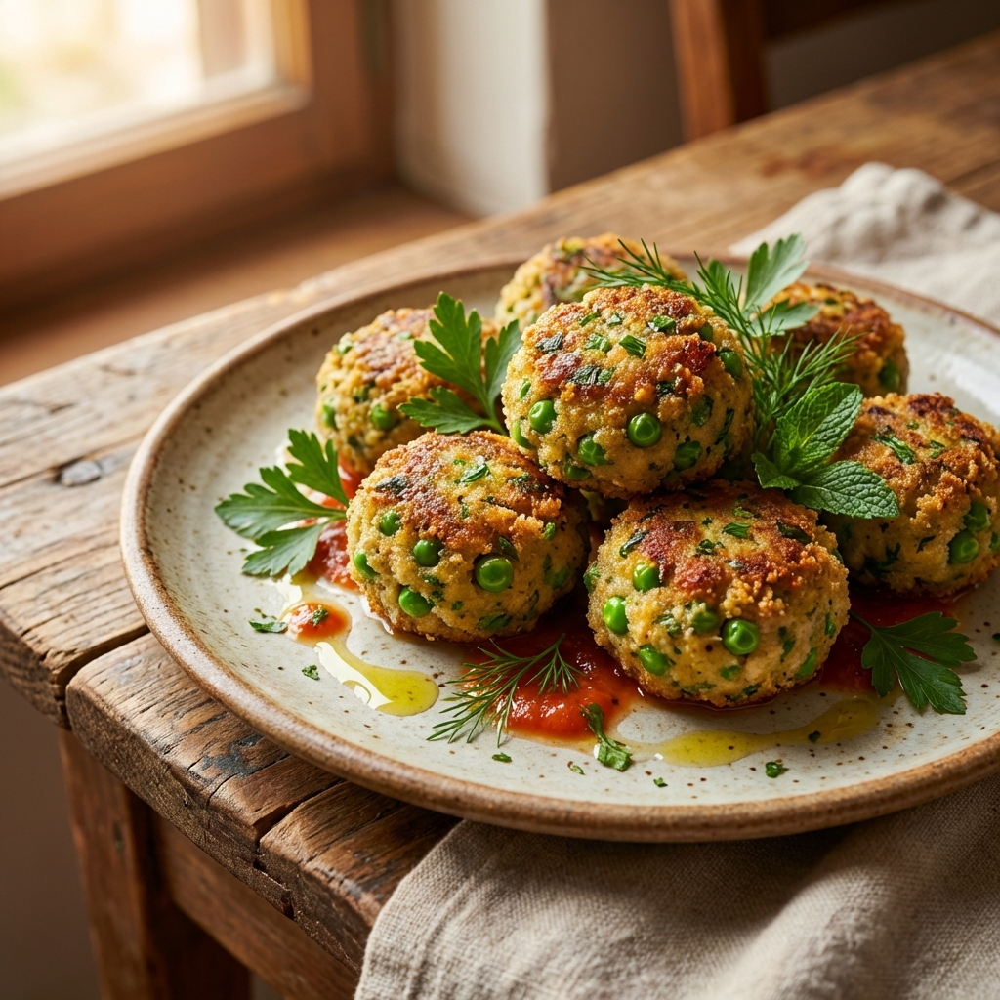

Albóndigas de Arvejas
Proteína vegetal y claridad mental. Un equilibrio perfecto de vegetales y especias para tu bienestar.
Ver receta →Alimentos que sanan, nutren y equilibran tu energía vital.
Proteína vegetal y claridad mental. Un equilibrio perfecto de vegetales y especias para tu bienestar.
Ver receta →
Una receta tridóshica, ligera y nutritiva. Ideal para equilibrar Vata, Pitta y Kapha sin generar toxinas.
Ver receta →
Descubre cómo preparar el tofu según el Ayurveda para potenciar su energía y digestibilidad.
Ver receta →Equilibrio perfecto que no inflama y satisface el alma. Aliado del sistema nervioso y rico en minerales.
Ver receta →